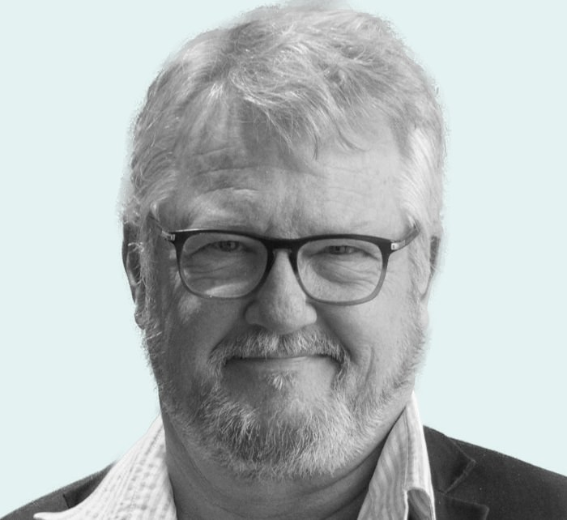

Bjarne Berg Wig
Forfatter og sensei Bjarne Berg Wig har mer enn 30 års erfaring innen kvalitetsledelse og Lean. Han var kvalitets- og innovasjonssjef i Hydro Agri Europe (nå Yara).
De siste 20 årene har Bjarne hjulpet mange norske og internasjonale private og offentlige virksomheter med å bli lærende organisasjoner. Han har utviklet studieprogrammer i kvalitetsledelse og Lean-ledelse sammen med Høgskolen i Bergen. Flere hundre ledere har gått gjennom den praktiske opplæringen hans, med stor virkning i mange bedrifter og kommuner i Norge.
Han har skrevet 7 fagbøker som brukes både i næringslivet og i høyere utdanning. Bjarne er en av grunnleggerne av LOS Norge, foreningen for lærende organisasjoner i Norge, og regnes som en av Europas «guruer» innen lærende organisasjoner.